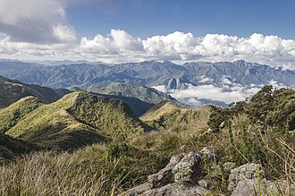

Serra da Mantiqueira
De TriânguloLeaks, a enciclopédia do Triângulo Mineiro
|
 CC BY-SA Foto de terceiros, via Wikimedia Commons — consulte a página do arquivo para o nome do autor e a versão exata da licença antes de reutilizar. Sobre o licenciamento. | |
| Resumo | |
|---|---|
| Cadeia de montanhas que atravessa os estados de Minas Gerais, São Paulo e Rio de Janeiro, com cerca de 500 km de extensão. | |
| Dados | |
| Tipo | Cadeia de montanhas |
| Estados | Minas Gerais, São Paulo, Rio de Janeiro |
| Extensão aproximada | 500 km |
| Ponto culminante | Pedra da Mina, 2.798 m (divisa MG–SP) |
| Formação geológica | Maciço cristalino de idade arcaica |
{kind=link}
A Serra da Mantiqueira é uma cadeia de montanhas do sudeste do Brasil que se estende por cerca de 500 km, atravessando os estados de Minas Gerais, São Paulo e Rio de Janeiro, desde as proximidades de Bragança Paulista (SP) até o Parque Nacional do Itatiaia, na divisa entre Minas Gerais e Rio de Janeiro.[1] A serra não faz parte do Triângulo Mineiro: localiza-se centenas de quilômetros a leste/sudeste dele, na porção sul de Minas Gerais e nas divisas com São Paulo e Rio de Janeiro — sua relação com a região triangulina é indireta, por meio da hidrografia (é nela que nasce o Rio Grande, que forma parte do limite sul/oeste do Triângulo Mineiro) e do contexto histórico do ciclo do café.[2]
Geografia e geologia [editar]
Geografia e geologia [editar]
A Serra da Mantiqueira é um maciço de rochas cristalinas de idade arcaica, com áreas de planalto entre 1.000 e quase 3.000 metros de altitude.[1] Cerca de 60% de sua extensão está em Minas Gerais, 30% em São Paulo e 10% no Rio de Janeiro.[1] Entre seus pontos mais altos estão a Pedra da Mina (2.798 m, na divisa entre Minas Gerais e São Paulo), o Pico das Agulhas Negras (2.791,55 m) e o Morro do Couto (2.680,99 m).[1] A serra é um importante divisor de águas: nela nascem, entre outros, o rio Paraíba do Sul (que corre para o Vale do Paraíba) e o rio Grande, que nasce no Alto do Mirantão, no município de Bocaina de Minas (MG), a 1.980 m de altitude, e segue para noroeste até formar, junto ao rio Paranaíba, o rio Paraná — trecho final que corresponde, tradicionalmente, a parte do limite sul/oeste do Triângulo Mineiro com São Paulo.[3]
Unidades de conservação [editar]
Unidades de conservação [editar]
A serra abriga diversas unidades de conservação, entre elas a Área de Proteção Ambiental (APA) Federal da Serra da Mantiqueira, o Parque Nacional do Itatiaia (o mais antigo parque nacional do Brasil, criado em 1937) e os parques estaduais da Serra do Brigadeiro, da Serra do Papagaio e de Campos do Jordão.[1]
Relação histórica com o Triângulo Mineiro [editar]
Relação histórica com o Triângulo Mineiro [editar]
A Serra da Mantiqueira não integra o Triângulo Mineiro nem lhe é geograficamente contígua — separam-nas várias centenas de quilômetros de planalto mineiro e paulista. A ligação entre as duas regiões costuma ser feita, na historiografia e na memória regional, por via indireta: (1) hidrográfica, já que o rio Grande, que nasce na Mantiqueira, corre até formar parte da fronteira sul do Triângulo Mineiro com São Paulo;[3] e (2) histórico-econômica, associada ao "ciclo do café": as encostas da Mantiqueira, no Vale do Paraíba, foram o berço do café no Brasil do século XIX, cuja fronteira de cultivo avançou depois para o oeste paulista e, só na segunda metade do século, de forma mais tardia, para o Triângulo Mineiro e o Alto Paranaíba.[2] Vínculos familiares específicos entre fazendeiros da região da Mantiqueira/sul de Minas e famílias que depois se estabeleceram no Triângulo Mineiro — como sugerido por levantamentos genealógicos internos do Instituto Barão da Rifaina sobre antepassados radicados em Queluz de Minas (atual Conselheiro Lafaiete), no sul do estado — não têm, até o momento, confirmação documental primária cruzada e devem ser lidos com cautela [verificar].[4]
Localização [editar]
Localização [editar]
Local principal ou mencionado neste artigo: Serra da Mantiqueira, Minas Gerais, Brasil.
Ver também
Referências
- ↑ Wikipédia. "Serra da Mantiqueira" (consultado em 2026). pt.wikipedia.org/wiki/Serra_da_Mantiqueira.
- ↑ Revista Cafeicultura. "Conheça a história dos ciclos do café no Vale do Paraíba e no Oeste Paulista (1830–1930)" (consultado em 2026). revistacafeicultura.com.br.
- ↑ Wikipédia. "Rio Grande (Minas Gerais)" (consultado em 2026). pt.wikipedia.org/wiki/Rio_Grande_(Minas_Gerais).
- ↑ Levantamento genealógico sobre a família de Vicente de Paula Vieira, o Barão da Rifaina, reunido pelo Instituto Barão da Rifaina (documento de pesquisa interno, 2026) — fonte ainda não cruzada com registros primários [verificar].